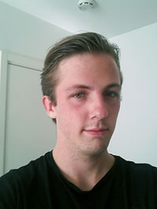

En liten presentation
Lite intressant fakta om mig
- Namn:
- Henrik Kjell Mikael Gabrielsson
- Född:
- 4:e augusti 1990 (23 år gammal)
- Uppvuxen i:
- Ljurhalla. En liten ort några mil utanför Borås.
- Favoritcitat:
- "Kommer inte på nåt just nu" - Henrik Gabrielsson
5 Mindre intressant uppgifter om mig
- Tycker att lasagne är överskattat.
- Är livrädd för tusenfotingar.
- Gråter när jag ser på Pixar-filmer.
- Kan inte vissla.
- Har under sin uppväxt varit slav åt:
- 2 hundar
- 4 undulater
- 6 kaniner
- ca 10 marsvin
- Vansinniga mängder katter
Intressen
Jag har ett stort intresse för filmer, böcker och musik, vilket tar upp ganska mycket av min fritid. Att umngås med kompisar, spela tv-spel och lyssna på musik
underhåller jag mig också med när det inte finns annat att göra.
Jag har under de senaste åren också fått ett stort intresse för programmering. Jag är dock fortfarande en nybörjare på området,
men jag ser fram emot att lära mig mer.
Familj
Min familj består av mina föräldrar, Renée och Kjell, samt mina syskon Mathias, 25 år, Daniela, 21 år, och Joachim, 19 år.
Utbildning och tidigare erfarenhet
jag har tidigare läst på högskoleprogrammet Webbredaktör i Borås. Det var en 2-årig utbildning där jag fick lära mig en blandning av design, bildbehandling, textskrivande och lite programmering. Det jag tyckte var absolut mest intressant att lära mig under hela utbildningen var dock programmeringen, och det var också därför som jag valde att fortsätta studera detta här i Kalmar.
Framtiden
Jag känner redan på mig att den här utbildningen är något för mig, och jag ser fram emot de nästkommande två åren och eventuellt det tredje påbyggnadsåret. Därefter hoppas jag förstås på jobb som webbutvecklare.
En liten länklista
Här är två mindre bra webbplatser som jag har utvecklat. Samt en extremt användbar webbplats när man har problem med något kodningsrelaterat.